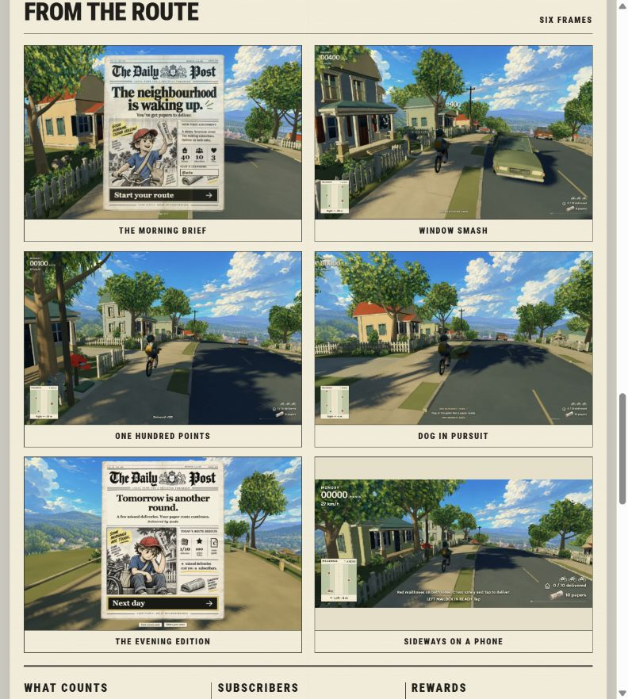
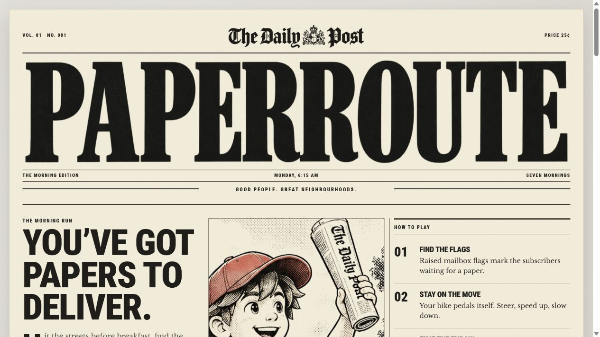
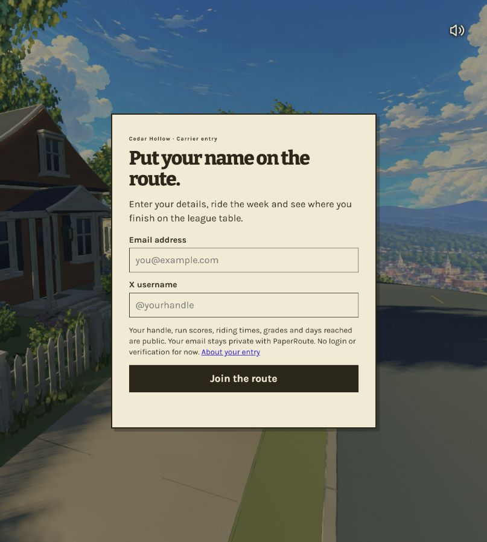
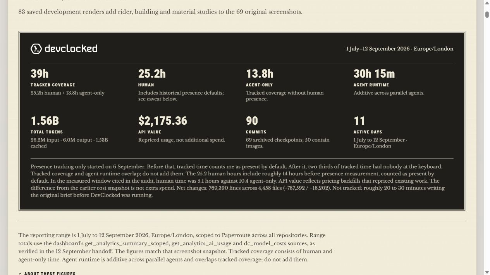

主要能力：可玩的 3D 送报
官网描述骑行、投递、障碍、七日进程、手机输入和成绩展示；开发日志补充了制作过程。当前按游戏与开发案例收录，通用库与开源身份尚未确认。
看真实能力，
判断对我们的价值。
网页 × 游戏 × AI 创作
PaperRoute 把骑车送报变成浏览器里的街区冒险：识别订户、把握投递时机，在一周的挑战里维持自己的路线。
我们的结论：保留为低优先级开发案例。过程仍是原型、打磨和优化；独有方法、代码复用与效率优势尚未得到充分验证。
从真实页面开始阅读
画面由上游提供；本次截取官网画廊，未实测原作完整玩法。
01明确的核心动作
骑行与投递
07官网描述的挑战周期
连续七个清晨
04本研究保存的
真实页面截图
01 / CAPABILITIES
选择一个角度，查看能力与对应证据。
值得借鉴围绕同一个动作设计即时反馈和长期目标。
查看官方玩法说明 ↗值得借鉴记录每个视觉选择解决的问题，而不只是它的风格。
查看原页面 ↗
值得借鉴网页分发方便触达；入口条件同样影响首次体验。
打开上游游戏入口 ↗
值得借鉴把日期、版本、截图与验证条件放在一起。
阅读统计口径 ↓
02 / RESEARCH CONCLUSION
这是我们的研究取舍，不是对游戏商业表现或艺术质量的评价。
官网描述骑行、投递、障碍、七日进程、手机输入和成绩展示；开发日志补充了制作过程。当前按游戏与开发案例收录，通用库与开源身份尚未确认。
从想法做出原型，再打磨模型、镜头、交互和性能。AI 参与执行；目前公开材料没有充分呈现独有方法或能完整照做的原始任务记录。
可借鉴目标提示、操作反馈和任务到结算的衔接。对寻找新技术与可复用能力的目标，新增价值有限；不把通用开发建议包装成项目独有方法。
上游仓库线索访问返回 404，源码、许可证和接口待核实。作者统计缺少相同任务的对照基线，无法据此推算普遍节省的时间或成本。
我们的实践原型使用独立代码和程序化模型。原型实测结果与原作官方描述分别记录；六轮实践指南属于通用指导，其中的新任务尚未实施。
03 / DEVELOPMENT RECORD
2026-09-13 读取的页面摘要，全部为作者自报。
| 记录项 | 首页 | 开发日志 |
|---|---|---|
| 记录覆盖时间 | 35h | 39h人工 25.2h / 仅代理 13.8h |
| Token 总量 | 1.51B | 1.56B其中缓存约 1.53B |
| 阶段数量 | 69 个检查点 | 69 个检查点与 90 次提交不是同一指标 |
日志区间为 2026-07-01 至 2026-09-12。早期人工在场时间采用默认归类；代理运行时间与覆盖时间重叠，不能相加。
日志中的 $2,175.36 API value 是重定价估值，不能直接当作实际账单或新增支出。Token 总量也不是生成代码量。
这些记录提供了过程线索；本研究没有独立审计，也没有由它们推导统一开发成本。
04 / EVIDENCE & LIMITS
开发日志指向的 GitHub 仓库在研究当日返回 404，开源状态待核实。排行榜注明包含合成启动分数，不能据此判断真实用户规模。所有截图来自当日在线页面，画面中的商标与素材权利属于上游权利人。